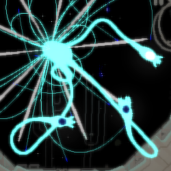

Downpour
downpour
downpour je DLC pro rainworld. bylo přidáno 6 nových kampaní, 10 nových regionů, expediční mod, 18 nových zvířat 70 challengí, možnost stahovat mody, offline multiplayer pro tři základní kampaně a mnoho dalšího.
kampaně
kampaně budou probírány chronologicky a ne podle pořadí v jakém jsou odemčeny
spearmaster
první nová kampaň je spearmaster. tato kampaň se odehrává jako první. jedna z největších změn ve světě je to že se kampaň odehrává před moonovým pádem. to znamená že můžeme vidět verzi garbage wastes než je pebles zničil, starou verzi shoreline, nyní pojmenovanou waterfront facility a nejdůležitější je že můžeme navštívit moona. příběh kampaně je následující. five pebles odříznul kontakt s jeho lokální skupinou itteratorů a začíná vážně ohrožovat stabilitu moonovy superstruktury. jeden z jeho nejbližších přátel, itterator seven red suns pošle speciálně vyvinutého posla s datovou perlou v žaludku. tato perla obsahuje prosbu aby přestal vyhazovat rot do garbage wastes a tím zabránil moonově pádu, a zároveň prosbu aby znovu začal komunikovat. tímto poslem je spearmaster. jeho největší výhoda je že umí ze svého ocasu vytahovat neomezené množství oštěpů. ty jsou také jeho jediným způsobem obživy jelikož skrz ně vysává jídlo z nabodnutých zvířat. spearmaster se do peblesovy superstruktury dostane stejnou cestou jako survivor a monk, ovšem úmyslně. provázen je jedním ze sunových overseerů. postupně se s jeho navigací dostane do peblesovy komnaty. pebles není vůbec v dobré náladě, a po vstupu vyrve perlu ze spearmastera přečte její obsah, zabije sunova overseera a vyhodí spearmastera i s perlou. spearmaster, nyní bez navigace od overseera se vydá směrem k moonovi. moon je mnohem přívětivější a po přečtení perly ji přepíše a požádá spearmastera aby ji donesl ke komunikační věži v sky islands. zde se perla odvysílá a hráč zjistí že obsahuje informaci že v příštích několika cyklech dojde k moonově pádu a její finální rozloučení se všemi ostatními. kampaň poté skončí obrázkem spearmastera zpátky u seven red suns
artificer
druhá kampaň je artificer. tato kampaň se odehrává jen pár cyklů po spearmasterovi, jelikož ještě nedošlo k moonově pádu. artificer je mistr exploziv, který umí podobně jako tyrkysové ještěrky používat exploze k pohybu a za cenu jídla umí vytvářet explozivní oštěpy a bomby. pomocí snů které nastanou když artificer hibernuje v ůkrytu zjistíme že artificer měl dříve dvě děti ale ty byly zabity scavengery. artificer proto chodí po světě a vyvražďuje jednu scavengeří kolonii za druhou. v blízkosti jedné z nich nalezne maléé zařízení které se aktivuje a začne ho následovat. artificer se postupně dostane k five peblesovi, který je mnohem sympatičtější k artificerovi kvůli jejich nesnášenlivosti vůči scavengerům. artificer se doví že malé zařízení je ID dron používaný ke vstupu do města na vrcholu peblese, kde se usadila velká populace scavengerů. pebles potom navrhne aby je artificer "navštívil". artificer se tedy vydá do města, prozabíjí se hordami scavengerů a nakonec narazí na jejich krále. toto vede k jednomu ze dvou bossfightů. nakonec si artificer vezme masku scavengeřího krále a stane se tak novým králem.
gourmand
po artificerově kampani následuje hunter a po něm je naše další kampaň gourmand. gourmand je tlustší a pomalejší slugcat. toto však může využít k jeho prospěchu a zabít predátory tím že na ně spadne z velké výšky.gourmand také umí zkombinovat dva itemy do jednoho. gourmand je na misi najít jídlo pro stejnou kolonii slugcatů k jaké později bude patřit survivor a monk. gourmandova kampaň začíná v shaded citadel, kde se hráč naučí kombinovat itemy tím že vytvoří lucernu. gourmand se postupně dostane k five peblesovi. ten nakonec odemkne brány pryč z jeho komplexu. gourmand následuje jeho pokyny a dostává se do regionu outer expanse. v tomto regionu na konci najde svoji kolonii a kampaň končí. populární teorie je že gourmand má všechny tyto schopnosti protože je to jen vyprávění které se předává v kolonii a v realitě nabylo vůbec tak epické. tuto teorii podporuje i to že gourmand je schopen vytvořit i věci které by vůbec neměly existovat, jako singularity bomby.
rivoulet
po gourmandovi následuje survivor a monk a po neurčité době se dostáváme k rivouletovi. o jeho původu víme pouze to že se v minulosti setkal s nějakým itteratorem jelikož má schopnost jim rozumět již od začátku. rivoulet také nese datovou perlu v žaludku ale vůbec nevíme kde ji získal. jeho specialita je vysoká rychlost jak na souši tak ve vodě a zvýšená doba na kterou může zadržet dech. po příchodu k moonovi zjistíme že datová perla obsahuje schémata itteratorovy superstruktury, konkrétně stejného typu itteratora jako five pebles. po příchodu do jeho struktury zjistíme že byla kompletně zamořená rotem. pebles dříve konstantní nulová gravitace se zapíná a vypíná, a pebles sám jen sedí na zemi své místnosti a poslouchá neznámou skladbu ze staré dataperly. po příchodu rivuleta ho pebles požádá aby vyjmul jeho mass refraction cell, zdroj jeho nulové gravitace a energie, a dal ji moonovi jako jeho poslední dar. to jen urychlí jeho smrt. rarefaction cell se dá aktivovat a dá rivouletovi sníženou gravitaci a mnohem rychlejší plavání. moon mu po předání řekne že blízko něj je vstup do jeho superstruktury, ale většina z ní leží pod vodou. rivoulet tedy najde vstup do submerged superstructure a po dlouhém plavání zatopenými chodbami a jeskyněmi se dostane do moonova srdce. tam vvloží svojí refraction cell a reaktivuje moona. poté ho proud vody odtáhne pryč. po nějaké době uvidíme rivouleta vyplavat na neznámém místě. a tam uvidíme že celá oblast je zasněžená, něco co jsme předtím neviděli. rivoulet se tedy dostane skrz zasněžené zohýbané ruiny a dojde ke karma bráně pryč z toho místa. ta má na druhé straně stejný symbol jako peblesovo město což nás vede k závěru že rivoulet prošel ruinami moonova města. rivoulet poté zhora spadne do moonovy místnosti a najde ji v plné síle. její struktura má nyní nízkou gravitaci a moon je plná života. tam kampaň končí ale když se připojíme zpátky zjistíme že moon pojmenoval rivouleta ruffles a on je nyní jeho mazlíčkem.
saint
po dalších tisících cyklů začíná kampaň sainta. saint je zvláštní slugcat. ze začátku má pouze dva karma levly místo obvyklých pěti a musí si je získat zpět. také nemůže házet oštěpy ale zase má dlouhý jazyk který funguje jako permanentní grapple worm. saint začíná v neznámé oblasti uprostřed sněhové vánice. z té se rychle musí dostat než umrzne k smrti. zanedlouho zjistíme že jsme v zasněžených sky islands. svět se velmi změnil a většina druhů života už není ve světě k nalezení. pokud se saint pokusí dostat přes chimney canopy k peblesovy zjistí že pebles je pryč. po další době putování a sbírání karma levelů se saint ocitne v drainage system a tato oblast je k nepoznání. celé místo je zarostlé a bují životem. všechny druhy které jsou jinde vyhynulé jsou tady a daří se jim velmi dobře. moon je stále naživu a říká že saint jí připomíná dobrého přítele který zemřel před mnoha cykly. tím má na mysli rivouleta. saint se poté vydá do shaded citadel ale vstup vypadá jinak než obvykle. a tady zjistíme co se s peblesem stalo. pebles spadl na shade citadel a celý region je nyní rozdrcená zničená změť peblesovy superstruktury a shaded citadel. i všechen rot je mrtvý a vše co z něj zbývá jsou dvě malé části v jedné zapadlé místnosti. a po nějaké době prozkoumávání najdeme i peblese. stále naživu ale skoro neschopný mluvit sedí uprostřed mrazu a posluchá tu stejnou hudbu která se již glitchuje a rozbíjí po tom čase. pebles dokonce poděkuje saintovi za společnost, něco co předtím nikdy nedělal. saint se poté dostane na maximální karmu a zjistí že má schopnost vyjmout vše z cyklu. to samozřejmě udělá i s peblesem který si to po všem svém trápení už zasloužil. saint se poté vydá tam kam survivor a monk ale zjistí že depths jsou pryč a na jejich místě je jen nekonečná propast. po skoku do propasti se dostává na místo zvané rubikon. rubikon je kombinace místností které jsme předtím viděli všude po světě avšak nyní mají červeno zlatý odstín a jsou plné nebezpečných tvorů. saint probojuje svojí cestu pryč z toho místa a narazí na void sea, ale tentokrát plave směrem nahoru. ale saint nevystoupí z cyklu a najdeme ho na stejném místě kde začal. předtím však dostaneme poprvé v jeho kampani pohled nad mraky a všichni itteratoři v dálce jsou rozbití a zničení. saint je velmi záhadný charakter ale pokud zůstaneme u budhistické mytologie tak saint by byl ekvivalent budhy. mohl se vymanit z cyklu ale míst toho zůstal aby pomohl ostatním se z něj dostat. to je z jeho kampaňe vše ale v poslední challengi hrajeme za sainta a naším ůkolem je dostat sliver of straw pryč z cyklu. to je druhý bossfight z celé hry a vede nás k přesvědčení že saint mohl za to že sliver of straw jako jediný itterator vystoupil z cyklu.

regiony
pipeyard
první region je pipeyard. pipeyard je přístupný pro všechny slugcaty a funguje hlavně jako rychlá cesta z jedné strany mapy na druhou. region má plavací část u vstupu do shoreline, ůzké trubky u vchodu do subterranean, a platforming sekci u vchodu do sky islands. kromě těchto regionů se ještě napojuje na industrial complex.
zajímavosti
- perla z tohoto regionu a jeho jméno v souborech VS (void system) nám ukazují že tento region byl určen k získání void fluid
submerged superstructure
submerged superstructure je potopená struktura moona. region je přístupný pro všechny slugcaty po artificerovi, ale kromě rivouleta budou potřebovat jetfish nebo jiný způsob jak se dostat skrz. region je pouze napojený na shoreline.
zajímavosti
- dolní část regionu má některá spojení pro všechny slugcaty kromě rivouleta neoznačené. ty označené vedou nejjednoduší cestou skrz
- ztlumená verze moonovy sirény (vysvětleno později) stále hraje před deštěm v nižších částech potopené struktury
- submerged superstructure je jeden z největších regionů ve hře s 134 místnostmi
outer expanse
outer expanse je region který sestává ze tří částí. první je sunken pier. tento temný region osvětlený jen velkými světly má dvě možné cesty. horní sestává z vlakové dráhy kde je potřeba dobré platformování. dolní je velmi podobná garbage wastes ale tmavá. temný tunel se postupně zesvětluje až se dostaneme do příští části. tato část obsahuje staré zarostlé ruiny a dokonce i část kudy se survivor a monk dostali do peblesova území. poslední část je journeys end. tato klidná část obsahuje hlavně vysoký strom z jehož vrcholu můžeme v pozadí vidět peblesovu superstrukturu, a samotnou kolonii slugcatů ze které gourmand, survivor a monk pocházejí. po dokončení gourmandovy kampaně se brána do outer expanse otevře i pro survivora a monka a oba mohou dostat nový konec.
zajímavosti
- journeys end a sunken pier mají jinou hudbu během dne a noci (noc nastane krátce před deštěm)

waterfront facility
waterfront facility je verze shoreline která ale obsahuje více souše a méně velkých vodních ploch. její součástí je také precipe - verze mostu v chimney canopy která vede od underhangu k moon. region má stále stejná zapojení jako shoreline plus zapojení k precipe.
zajímavosti
- waterfront facility je v souborech pojmenována LM (looks to the moon)
metropolis
metropolis je město na vrcholu peblese, které je přístupné pouze pro artificera. region sestává ze tří částí. the floor je další vlaková trať. v tomto podregionu také overseerové někdy zobrazí reklamu na pití jménem five pebsi (samozřejmě parodie na pepsi). druhý region je hlavní část. obsahuje platforming který potřebuje artificerův explosive jump. region také obsahuje několik skupin scavengerů. poslední část je atop the tallest tower. je to nejvyšší bod v celém rainworldu
zajímavosti
- přestože v regionu neprší se na začátku cyklu objevuje duha
- dvě perly v tomto regionu mají data která nelze normálně přečíst jelikož moon je pro artificer nepřístupný. jediný způsob jak tyto perly přečíst je v expedition díky náhodnému místu začátku.
rot
the rot je verze five pebles která je kompletně zarostlá rotem. je přístupný pouze rivouletovi a stále je propojený se stejnými regiony jako five pebles
looks to the moon
looks to the moon je region velmi podobný five pebles. propojený je pouze s waterfront facility a přístup k regionu má jen spearmaster.
zajímavosti
- narozdíl od peblese moonova wall (luna) leg (struts) a underhang (vents) není samostatný region
- moon má nejvíce podregionů ze všech regionů (6)
- ve struts před deštěm můžeme slyšet sirénu která pravděpodobně signalizuje déšť. moon je starší než pebles a za doby jeho konstrukce ještě starověká civilizace žila na povrchu, což vysvětluje proč žádná siréna není slyšet v exterioru
- trubky světla, overseerové a inspektoři jsou zde všichni žlutí. to symbolizuje moonovu barvu. všechny tyto komponenty jsou u peblese světle modré
undergrowth
undergrowth je saintova verze drainage systemu která je kompletně zarostlá a má větší populaci zvířat než normálně.
silent construct
silent construct je kombinace five peblese a shaded citadel. region jsem již vysvětlil.
zajímavosti
- v místě kde dříve byla mass refraction cell se nyní nachází scavenger obchodník
- mrtvý rot indikuje že nemůže přežít bez správných podmínek (funkční itterator)
rubicon
rubicon je region kde saint může použít svoje schopnosti na maximum. hráč by ale měl být připraven na jeden z největších regionů ve hře.
zajímavosti
- všichni tvorové v tomto regionu mají nazlátlou barvu
- v tomto regionu lze nalézt zlatou ještěrku. její staty jsou naprosto stejné jako červená ještěrka, a zde ji nahrazuje
- reputace se všemi tvory v regionu je -500. to je dělá velmi agresivní
- pokud saint stojí na místě zatímco se drží tyče tak pomalu pojede vzhůru dokud nestojí na vrcholku. to by mohlo poukazovat na fakt že je přitahován k void sea ale to je jen spekulace
fauna
inspector
inspector je nový tovr který se nachází v five pebles a looks to the moon. pokud hráč sní neuron nebo zaůtočí na inspectora tak po něm začne házet oštěpy. podle některých jsou mobilní verze rotu nakažení inspektoři kvůli jejich podobnému tvaru a tomu že spawny rotu postupně nahrazují spawny inspectorů
elitní scavenger
elitní scavenger je verze scavengera s více životy která také dokáže skákat velmi vysoko. jejich maska má podobný ůčinek jako maska vultura.
yeek
yeekové jsou tvorové nalezení v outer expanse. skáčou velmi vysoko čehož může hráč využít. po chycení dostane hráč zvýšenou výšku skoku.
hunter long legs
hunter long legs je malá lososová verze rotu která má uprostřed mrtvého huntera. dá se potkat v gourmandově kampani na stejném místě kde jste zemřeli jako hunter na svém posledním cyklu.
train lizzard
train lizzard je vylepšená verze červené ještěrky. nemá cenu se schovávat kvůli jejímu neuvěřitelnému zraku. své jméno odvozuje od faktu že se na vás řítí rychlostí vlaku a zastavit ji je zhruba stejně těžké jako zastavit vlak. vyhnout se za každou cenu.
caramel lizzard
karamelová ještěrka je tlustá ještěrka která umí podobně jako červená plivat lepivou hmotu. podobně jako elite scavenger se umí vymrštit do vysoké výšky.
eel lizzard
eel lizzard je lepší rychlejší verze salamandra která umí šplhat po tyčích
strawberry lizzard
strawberry lizzard má podobně dlouhý jazyk jako bílá ještěrka ale míst toho aby oběť přitáhla k sobě se ona přitáhne k oběťi. vzhledem k její tělesné váze je překvapivě odolná
giant jellyfish
giant jellyfish je velká medůza plavající na povrchu vody. její chapadla se naváďejí na zvuk což z ní technicky dělá agresivní zvíře.

stowavay
stowavay je velmi vzácné zvíře které většina hráčů ani nikdy neviděla. je zavěšená ze stropu a pokud pod ni něco projde tak vystřelí chapadlo které znehybní a přitáhne kořist. velmi nebezpečné kvůli tomu že žije v temných místech kde je ještě těžší je spatřit
miros vulture
miros vulture je verze supa která loví jen slugcaty. kromě svého zobáku má take laser který je ale jednoduchý na vyhnutí. v saintově kampani nahrazuje vultury a v rivouletově žije v moonově městě.

mother long legs
mother long legs je přerostlá verze mobilního rotu. velmi těžká na zabití a dá se nalézt pouze v jedné místnosti v rotu.

expedition mode
expedition mode je mod který nabízí znovuhratelnost. základní princip je že se oběvíte náhodně po světě a musíte plnit ůkoly jako navštívit region, zabít určitý počet zvířat nebo donést moonovi určitou perlu. na rozdíl od kampaně pokud zemřete na karmě 1 prohráváte. za splněné mise dostáváte body. za ty si potom můžete odemykat perky a burdeny
perky
perky jsou věci které vám pomohou se dostat skrz expedici. dělí se na dva typy - pomoc a abilitky. pomocné perky jsou perky které pomáhají nebo dávají itemy. takové jsou například že začínáte na karmě 5, začínáte s lucernou nebo bombou. abilitky jsou perky které dávají slugcatovi schopnosti jiných slugcatů. to znamená že můžu mít survivora který má artificerův explosive jump, rivouletovu rychlost a saintův jazyk. spearmasterův perk není schopnost generovat oštěpy ale držet dva oštěpy místo jednoho. můžete si vzít pouze určitý počet perků který se zvyšuje s tím jak odemykáte víc a víc perků.
burdeny
burdeny jsou modifikátory které za cenu vyššího rizika dávají až plus 75% bodů za misi. existují čtyři burdeny. první je blinded. tento burden zvýší odměny o 20% a odstraní všechno světlo. tento burden je jednodušší pokud máte perk že se spawnete s lanternou. druhý burden je doomed. tento burden dává plus 75% odměny ale zamkne vás na karma levelu 1 což znamená že jedna smrt znamená konec. perk že se spawnete s vyšší karmou nefunguje. třetí perk je hunted. přidává 50% odměny a udělá z vás nepřítele číslo jedna. všechny zvířata budou vědět přesně kde se nacházíte i když jsou na druhé straně regionu a půjdou si pro vás. poslední burden je pursued. přidává 35% odměny a na začátku každého cyklu se spawne červená stonožka s cílem vás za každou cenu najít a zabít. dá se zabít ale vždy se vrátí.
slugpups
gourmand má kromě svého normálního cíle i food quest. ten spočívá v tom sníst 22 různých jídel od batfly až po červenou stonožku. po jeho dokončení může hráč náhodně najít slugpupy po světě. po hibernaci se slugpupem se stane váš a můžete ho vychovávat jako dítě. slugpup bude sledovat co děláte a zkoušet to sám. slugpupové mají staty které se týkají jeho chytrosti, odvahy, síly atd. podle toho jaké staty mají jsou různě dobří. od slugpupů kteří odhodí oštěp a utečou po slugpupy kteří jsou schopni sólo zabít karamelovou ještěrku. pokud se dostanete s jedním nebo dvěma slugpupy do journeys end jako survivor tak dostanete speciální cutscénu kde budou slugpupové s vámi